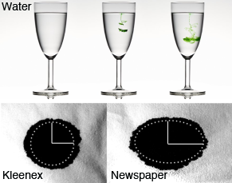
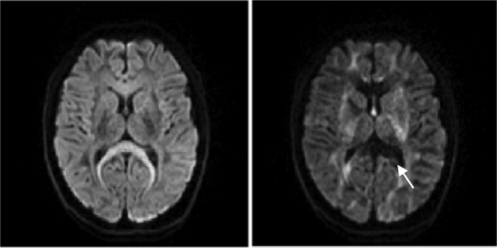
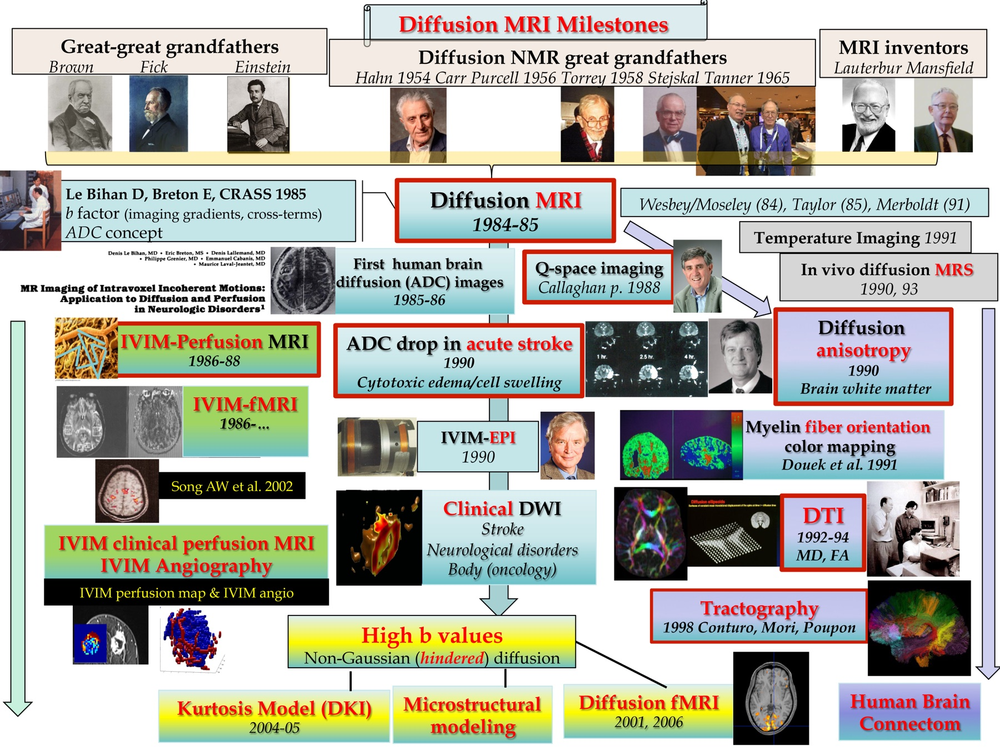

“Diffusion [MRI] is the one sequence that has made the most money and helped the most people in the least amount of time, with the least amount of effort.” This bold statement was made by Dr. Michael Moseley in an interview in 2012. While the history and foundation of diffusion MRI trace back over a century, most of the growth of diffusion MRI spans only the last few decades. The first observation of Brownian motion dates back to 1827, when botanist Robert Brown observed the jostling of pollen grains in water, but at the time, the underlying mechanisms of this motion were not well understood. It wasn’t until 1905 that Albert Einstein showed that diffusion was the result of Brownian motion, describing the phenomenon as the random motion of molecules due to thermal agitation. Einstein was probably unaware that this concept would have the potential to evolve into something as powerful as what Moseley described. The idea of imaging the human body in vivo, let alone using diffusion to infer tissue microstructure and white matter integrity, was unimaginable.
How can diffusion provide information about biological tissue?

Unlike in free water, the diffusion profile of water molecules in biological tissue is complex, which is explained in Figure 1 through the demonstration of diffusion processes for a droplet of ink in different media (water, Kleenex, newspaper). In the absence of any boundaries, such as in the glass of water, a group of molecules, starting at the same location, will spread out freely over time in all directions due to diffusion. This is unlike in biological tissue, where water molecules can still diffuse freely at very short times, but with time will encounter more and more microscopic restrictions (due to the presence of cell walls or membranes, fibers, axonal myelin sheaths, macromolecules), impeding the motion of the water molecules. As a result, in biological tissue, diffusion becomes time and direction dependent, or anisotropic. The concept of diffusion anisotropy is demonstrated in Figure 1, as shown with the droplet of ink in the newspaper spreading differently in various directions, compared to isotropic diffusion observed in Kleenex. Diffusion anisotropy, as observed in the in vivo brain, is demonstrated in Figure 2.

By applying the diffusion gradient in different directions, the diffusion of water molecules is probed along these directions, which in vivo, due to the anisotropic nature, results in different attenuation or contrasts. For example, the signal in the corpus callosum (as indicated by the white arrow), which runs left to right, is attenuated when the diffusion gradient is being applied along the white matter fibers (x-axis, right figure), while fully preserved when the gradient is being applied transverse to the white matter fibers (left figure).
The evolution of diffusion MRI
“In 1965, NMR was revolutionized,” says Moseley. That revolution was when Stejskal and Tanner applied a pair of bipolar gradients around the refocusing pulse of a spin echo sequence, sensitizing the diffusion of water molecules within the tissue. Today, the pulsed gradient spin echo (PGSE) or Stejskal-Tanner sequence is the most common sequence to measure diffusion. When first introduced, however, this concept did not gain immediate traction. While encoding of the diffusion process was finally made possible, the gradients at the time were incapable of localizing that process.
With time and technical improvements, Denis Le Bihan presented the first diffusion images in August 1985 at the Society of Magnetic Resonance in Medicine (SMRM) meeting. Shortly after, he showed that the apparent diffusion coefficient (ADC) in brain tumors is significantly reduced in comparison to normal brain tissue, and published his seminal paper “MR Imaging of Intravoxel Incoherent Motions: Application to Diffusion and Perfusion in Neurological Disorders”, which eventually led the earliest diffusion skeptics into believing that measuring diffusion in vivo was possible, and motivated powerful discoveries that would shape the field. Around the same time, Paul Callaghan, while working on diffusion in porous media, came up with an elegant way to fully characterize the diffusion profile, and called it q-space imaging, analogous to k-space imaging. In 1990, Michael Moseley further demonstrated the clinical utility of diffusion MRI, when he observed a significant decrease in water diffusion in the early phase of acute brain ischemia in a cat brain. Later that year, Dr. Robert Turner obtained the first echo planar imaging (EPI) images with diffusion, significantly reducing the acquisition of images (on the order of milliseconds) and removing most motion artifacts. This opened the doors for clinical applications, with the first whole brain diffusion MRI in acute stroke patients, which is nowadays the most firmly established clinical application of diffusion MRI.
Before long curiosity led groups to wonder how contrast in diffusion images changed with spatial direction. At the SMRM meeting in 1991, Philippe Douek and Denis Le Bihan presented one of the first attempts at doing this with their work on mapping myelin fiber orientation using two directions. Unrelated to this work, Peter Basser had another motivation – to measure hydraulic permeability tensors in tissue for a new drug delivery method – but by fate, stumbled upon this work at an annual NIH Research Festival. This interaction between Basser and Le Bihan eventually led to the birth of diffusion tensor imaging (DTI). The MRI field, however, was wary of using DTI and the tensor formalism, due to the mathematical complexity, as Basser notes in a personal recollection of the development of DTI in the book Diffusion MRI. Consequently, with Carlo Pierpaoli, Basser developed scalar metrics to describe the tensor – the fractional anisotropy (FA), mean diffusivity (MD), axial diffusivity (AD), and radial diffusivity (RD). The growth of DTI since then has been remarkable. In less than three decades, the scientific community went from viewing DTI as a tool too complex to be clinically viable, to deriving tractography images that are commonly being used for presurgical planning, or even as album covers in pop culture!

These groundbreaking studies pioneered the beginning of the long and continual investigation of diffusion MRI we are still undergoing today. Figure 3 highlights some of the major milestones in diffusion MRI, along with some of the novel research directions. Currently, research has shifted to how diffusion MRI could serve as a sophisticated tool for tissue microstructure characterization. Denis Le Bihan, in an interview for the ISMRM Historical Archives in 2012, succinctly describes the still uncovered potential of diffusion MRI: “Diffusion MRI is not only a tool to diagnose disease, but manage disease.”
